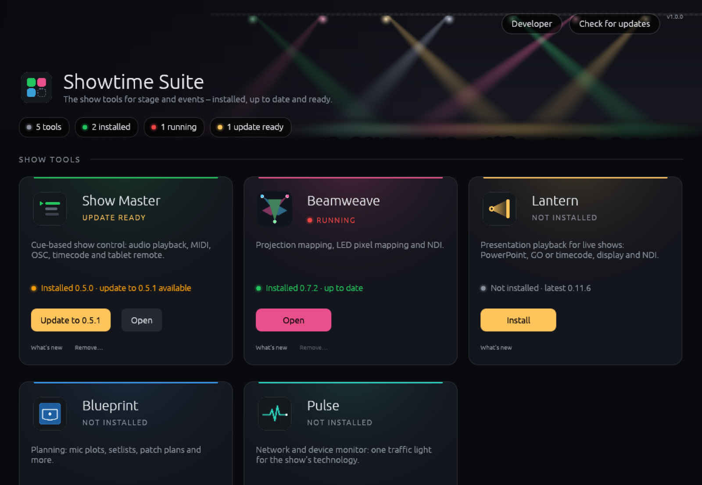
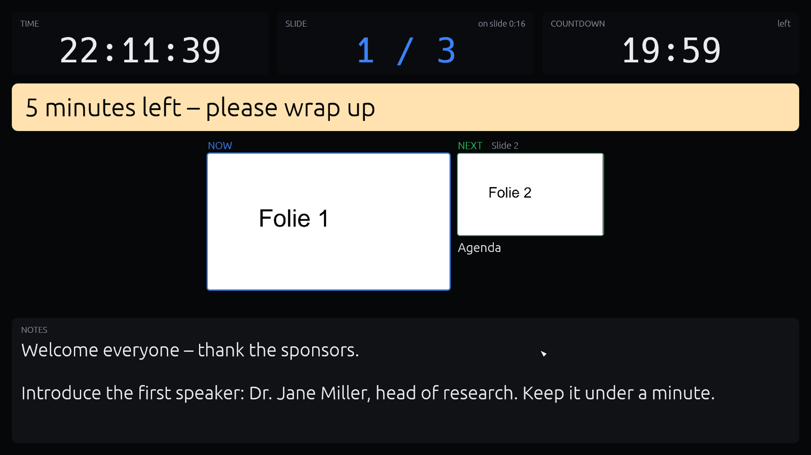
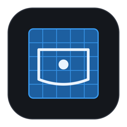

Showtime Suite
Free tools for live shows: playback, presentations, projection, planning and network monitoring. One launcher installs, updates and starts them.
Downloadnewest version on GitHub
For macOS, Windows and Linux. Install Showtime Suite once; it installs and updates the other apps.

The apps
Show Master
Cue-based show control: audio playback, MIDI, OSC, timecode and tablet remote.
 More about Show Master ›
More about Show Master ›
Lantern
Presentation playback for live shows: PowerPoint, GO or timecode, display and NDI.

More about Lantern ›
Beamweave
Projection mapping, LED pixel mapping and NDI.
 More about Beamweave ›
More about Beamweave ›
Blueprint
Planning: mic plots, setlists, patch plans and more.
 More about Blueprint ›
More about Blueprint ›Pulse
Network and device monitor: one traffic light for the show's technology.
 More about Pulse ›
More about Pulse ›The launcher
- One card per app: installed version, newest release, Install, Update, Open and what is new.
- Downloads come from each app's GitHub releases and are checked against their SHA-256.
- A running app is never replaced: a show may be going on.
- All apps go into one folder: Programs › Showtime Suite on the Mac, your own user folder on Windows and Linux, no admin rights needed.